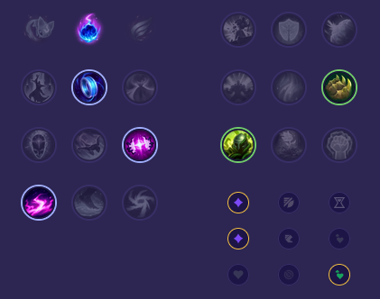

Starter: Pierścień Dorana 2x Mikstura Zdrowia Core Bulid: Pochodnia Mrocznego Ognia Buty Maga Kryształowy Kostur Rylai Full Bulid: Udręka Liandriego Zabójczy Kapelusz Rabadona Klepsydra Zhonyi

Słaby przeciwko: - Naafiri - Yone - Katarina - Zed - Fizz - Kassadin Dobry przeciwko: - Yasuo - Orianna - Syndra - Mel - Galio - Vladimir